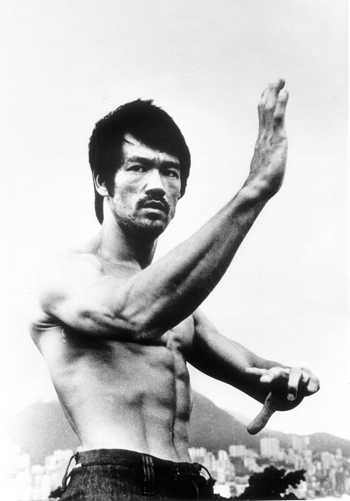

Bruce Lee
-Bruce Lee, born Lee Jun-fan, was a Hong Kong American actor,
director, martial artist, martial arts instructor and philosopher.
He was the founder of Jeet Kune Do, a hybrid martial arts philosophy drawing
from different combat disciplines that is often credited with paving the way
for modern mixed martial arts.
“Be like water making its way through cracks.
Do not be assertive, but adjust to the object, and you shall
find a way around or through it. If nothing within you stays rigid,
outward things will disclose themselves. Empty your mind, be formless,
shapeless, like water. If you put water into a cup, it becomes the cup.
You put water into a bottle and it becomes the bottle. You put it in a
teapot it becomes the teapot. Now, water can flow or it can crash. Be water, my friend.”
-Bruce Lee